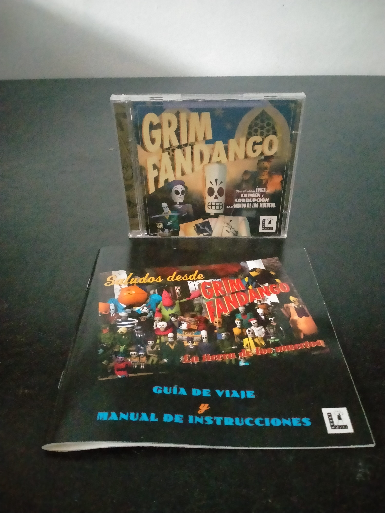

Ficha #000000
Grim Fandango
Grim Fandango es una aventura gráfica desarrollada por LucasArts y publicada originalmente en 1998 bajo la dirección de Tim Schafer. La historia sigue a Manny Calavera, agente de viajes del Departamento de la Muerte, durante un recorrido por el Mundo de los Muertos inspirado en el folclore mexicano, el Día de Muertos, el cine negro y la estética art déco. Supuso una importante transición tecnológica dentro del catálogo de LucasArts al sustituir el clásico motor SCUMM por GrimE, combinando personajes tridimensionales con fondos prerenderizados y control directo mediante teclado. Su narrativa, dirección artística, música de inspiración jazzística y humor oscuro la convirtieron en una de las obras más reconocidas de la aventura gráfica de finales de los años noventa. Esta edición física en estuche jewel case incorpora documentación en castellano y conserva el lanzamiento original para Windows en CD-ROM.
- Formato
- Jewel Case
- Plataforma
- Win95 Win98
- Género
- Aventura gráfica Aventura 3D Puzzle Comedia negra Cine negro
- Serie
- Todos Jewel Case
- Desarrollador
- LucasArts Entertainment Company
- Distribuidor
- LucasArts Entertainment Company, Electronic Arts
- EAN
- —
Contenido de la edición
- Estuche jewel case
- CD-ROM
- Guía de viaje y manual de instrucciones
Preservación
- Protección
- Verificación de CD
- Formato recomendado
- BIN/CUE
- Jugable en virtualización
- Sí
Preservación recomendada mediante imagen completa del CD-ROM original, preferentemente en formato BIN/CUE, junto con la digitalización de la guía de viaje y manual de instrucciones. La ejecución virtual es viable mediante un entorno Windows 95/98 o soluciones modernas compatibles con el motor GrimE, manteniendo montada la imagen del disco cuando la versión original realice comprobación de CD.